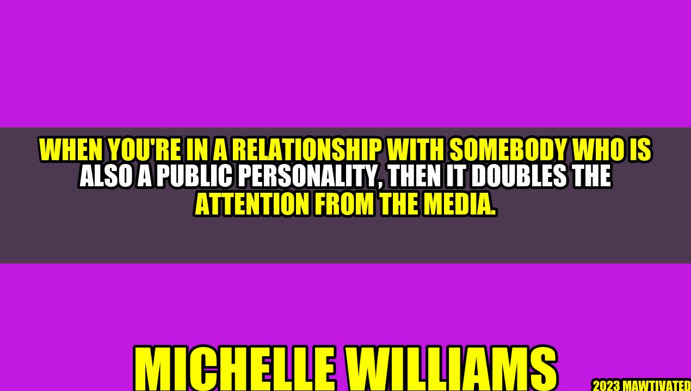

Public Relationships: Navigating the Attention of the Media

Imagine dating someone you love and cherish, someone who understands you completely, someone who makes you feel like the happiest person in the world. Now imagine that relationship being constantly scrutinized and dissected by the media, with paparazzi following you around every corner and rumors spreading like wildfire. That's the reality for many public personalities, and it can wreak havoc on their relationships.

"When you're in a relationship with somebody who is also a public personality, then it doubles the attention from the media." - Jennifer Aniston
Jennifer Aniston, known for her high-profile relationships and frequent appearances in tabloids, is no stranger to the impact of media attention on her personal life. She highlights the challenges of navigating a public relationship, particularly when both parties are in the spotlight. In this article, we'll explore some of these challenges and provide tips and strategies for managing them.
Why Public Relationships Are Different
Public relationships are characterized by a level of scrutiny and visibility that is not present in private relationships. When celebrities or public figures enter into romantic relationships, they are often subject to intense media scrutiny and public interest. This can be both positive and negative for the parties involved, as it can bring attention and fame but also invasion of privacy and stress.
One of the biggest challenges of public relationships is balancing the demands of the media with the needs of the relationship. Couples may find themselves constantly followed by paparazzi, hounded by reporters, and the subject of rumors and speculation. This can put a tremendous strain on the relationship, particularly if both parties are in the public eye.
Tips for Managing Public Relationships
While it may be impossible to completely escape the attention of the media, there are steps that couples can take to minimize its impact on their relationship.
- Be upfront about your relationship. It's better to be open and honest about your relationship from the start, rather than trying to keep it a secret. This can help to avoid rumors and speculation, and can also be an important step in establishing trust between partners.
- Set boundaries with the media. Couples can work with their publicist or media team to establish boundaries for the media, such as not answering questions about personal matters or declining interviews altogether. It's important to prioritize the relationship and protect it from intrusion as much as possible.
- Practice good communication. Like any relationship, communication is essential in public relationships. It's important to be open and honest with your partner about your feelings and needs, and to work together to navigate any challenges that arise.
- Take breaks from the spotlight. Couples can also take steps to limit their exposure to the media by taking breaks or "off" periods where they stay out of the public eye entirely. This can be an important part of prioritizing the relationship and maintaining a healthy balance.
Examples of Successful Public Relationships
Not all public relationships are doomed to failure. There are many couples who have managed to navigate the challenges of the media and maintain strong, healthy relationships. Here are a few examples:
- Beyonce and Jay-Z: As one of the most high-profile couples in the music industry, Beyonce and Jay-Z have faced their fair share of media scrutiny and rumors. However, they have managed to stay strong through it all, and have even been able to turn their challenges into powerful music and art.
- Chrissy Teigen and John Legend: Model and social media personality Chrissy Teigen and musician John Legend have been together for over a decade, and have been vocal about the challenges of maintaining a public relationship. However, they have also been able to maintain a sense of humor and a strong connection through it all.
- Will Smith and Jada Pinkett Smith: As two of the biggest stars in Hollywood, Will and Jada have been in the public eye for decades. Despite rumors and speculation, they have maintained a strong and loving relationship, and have been vocal about the importance of communication and trust in their partnership.
Conclusion
Navigating a public relationship is not easy, but it is possible. By setting boundaries, practicing good communication, and prioritizing the relationship, couples can weather the media storm and emerge even stronger. Remember:
- Be upfront and honest about your relationship
- Set boundaries with the media and protect your privacy
- Communicate openly and prioritize the relationship above all else
Hashtags and Categories
Hashtags: #publicrelationships #mediattention #celebritycouple #communicationSkills
Category: Relationships
Curated by Team Akash.Mittal.Blog
Curated by Team Akash.Mittal.Blog
Share on Twitter Share on LinkedIn